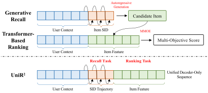
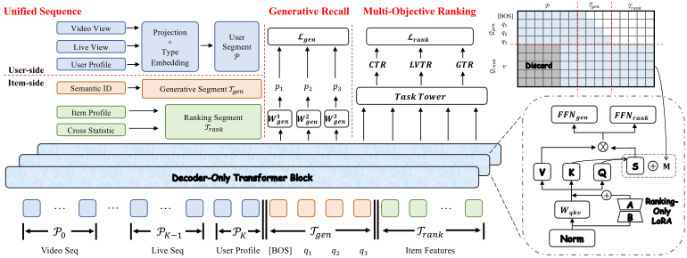
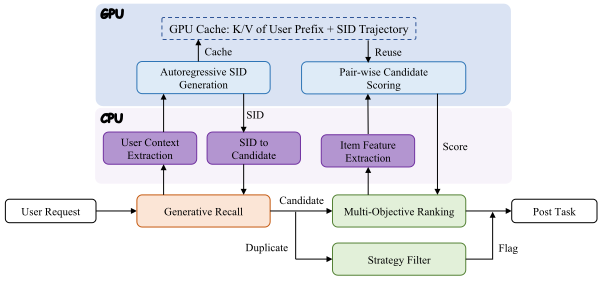
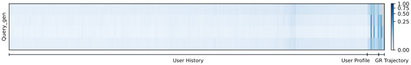
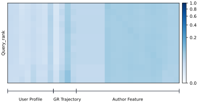
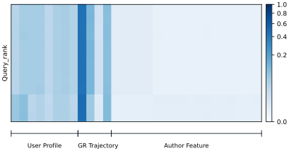
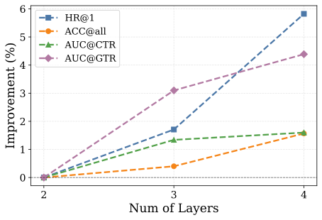
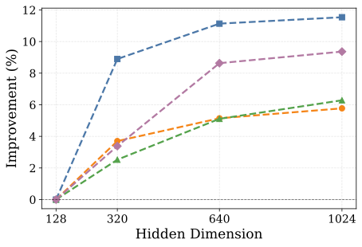
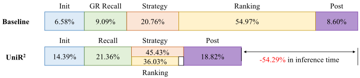

将生成式召回与多目标排序统一
于单个仅解码器序列中
摘要
现代工业推荐系统通常将召回与排序分为两个独立阶段。 尽管这种级联结构支持语料库级召回和细粒度多目标打分，但它会导致目标不一致、候选交接处的信息损失，以及用户侧上下文的冗余计算。 与此同时，生成式召回与排序的规模化共享相同的基于 Transformer 的建模理念，其中架构一致性为统一集成创造了天然机会。 然而，直接共享仍然具有挑战性，因为这两项任务需要不同的信息可见性和优化方法。 因此，我们提出 UniR2，这是一个 Unified 仅解码器 Transformer，在包含用户上下文、SID 轨迹和物品特征的单个异构序列中统一了生成式 Recall 与多目标 Ranking。 在该序列中，生成的轨迹作为召回与排序之间的表征桥梁，其中 Dual-Query Prefix-Causal Attention 提供任务特定的可见性。 两项任务共享基础注意力权重，但保留各自的优化边界，排序侧的 LoRA 在保持排序适应性的同时不破坏生成式主干。 在大规模工业数据上的大量离线实验证明了 UniR2 在召回和排序两方面的有效性和效率。 在快手平台上的长期在线 A/B 测试进一步显示出一致的正向收益，验证了统一模型在大规模推荐系统中的实用性。
1. 引言

现代工业推荐系统通常组织为多阶段级联结构。 给定一个用户请求，召回阶段 (Covington et al., 2016; Ying et al., 2018) 首先从包含数十亿物品的语料库中召回到数千个候选，随后排序模型 (Ma et al., 2018; Yang et al., 2026) 在多个业务目标下执行细粒度的用户-物品匹配。 这种分工多年来支撑了大规模推荐，因为召回强调高效搜索和覆盖，而排序强调对每个候选的准确区分。 然而，这种分离也在两个阶段之间引入了根本性差距。 召回和排序通常使用不同的目标进行优化，消费组织方式不同的特征，并在独立的参数空间中产生表征。 结果，候选生成阶段捕获的信息在阶段边界处被压缩为离散的候选列表，而用户上下文被不同模型反复编码。 这些问题导致目标不一致、表征损失，以及训练和服务中的冗余计算。
与此同时，该级联结构的两个阶段都在经历类似的面向 Transformer 的架构更新 (Vaswani et al., 2017)。 在召回侧，生成式推荐用分层语义 ID（SID）表示每个物品，并将大规模召回转化为自回归下一词元预测 (Rajput et al., 2023; Deng et al., 2025)。 Transformer 通过在以用户行为上下文为条件生成 SID 轨迹，学习物品语料库上的分布，从而避免了对物品逐个穷举打分。 在排序侧，近期模型越来越多地将异构字段、行为序列和上下文特征进行词元化，并使用多层注意力作为可扩展的特征交互主干 (Zhang et al., 2026b; Zhou et al., 2026)。 尽管两项任务保留不同的输出，它们现在共享若干重要的计算原语：词元化输入、用户上下文建模、基于注意力的特征融合，以及深层 Transformer 堆叠。 这种趋同自然引出一个问题： 能否将生成式召回与多目标排序表述为一个 Transformer 序列，而非两个孤立模型？
这样一个统一的 Transformer 提供了若干潜在好处。 首先，共同的序列空间可以保留召回期间产生的信息，并将其直接暴露给排序，从而缩小级联边界处的语义差距。 此外，两项任务可以共享用户侧上下文计算，因为在候选生成和打分之间复用中间键/值缓存，可以消除对长历史记录和个性化画像的重复编码。 再者，扩展这样一个单一的 Transformer 主干可以让召回和排序共同受益，而不是独立维护两个日益增大的模型。
然而，直接组合这两项任务并非易事。 生成式召回是一个结构化分布拟合问题，其中每个 SID 词元必须遵守自回归因果性并保持分层语义。 多目标排序则是一个判别式特征交互问题，其中所有物品侧特征同时可用，并且每个候选必须在稠密和稀疏目标（如点击、长观看和礼物）下进行评估。 因此，这两项任务需要不同的信息可见性和优化方法。简单地在单个序列中共享所有参数将导致召回质量与排序精度之间严重的跷跷板效应。
现有的召回与排序协作尝试并未完全解决这些问题。 一些方法在生成之后附加一个轻量打分器，或在原本分离的模块之间传递表征 (Fu et al., 2026; Sun et al., 2026a)；其他方法共享一个 Transformer 编码器或统一输入格式，同时保留任务特定的计算路径 (Dai et al., 2025; Li et al., 2026; Liu and Cao, 2026)。 这些方法改善了跨阶段协作，但生成的 SID 轨迹和细粒度排序特征仍然没有被组织在单个序列中以进行逐层交互。 因此，排序要么消费压缩后的生成后表征，要么需要额外的特征融合网络，而用户上下文可能仍被冗余处理。 因此，关键挑战不是简单地共享一个编码器或损失函数，而是构建一个在正向传播中提供表征耦合、同时保持两个目标之间优化隔离的单一序列。
为应对这一挑战，我们提出 UniR2，这是一个 Unified 仅解码器 Transformer，在单个异构序列中执行生成式 Recall 与多目标 Ranking。 UniR2 在一个 Transformer 主干中组织用户上下文、SID 轨迹和物品特征，使排序能够消费召回决策过程，而不仅仅是其离散的候选输出。 Dual-Query Prefix-Causal Attention 机制为因果生成和排序特征融合提供任务特定的可见性，同时 两阶段的不同优化目标保持了排序适应性，而不会破坏生成式主干的稳定性。 因此，UniR2 在一次训练正向传播中实现了表征耦合与优化隔离，并在在线推理期间以单一服务同时支持召回和排序。
我们的主要贡献总结如下：
-
•
我们为生成式召回与多目标排序引入了一个单序列统一的视角。通过将用户上下文、SID 轨迹和物品特征组织在一个仅解码器序列中，该框架将召回轨迹转变为用于逐层排序特征交互的表征桥梁。
-
•
我们设计了 UniR2，这是一个配备 DQ-PCA 和 LoRA 平衡优化隔离的统一架构。UniR2 在正向表征学习中耦合两项任务，同时防止排序梯度破坏自回归召回主干，并通过共享上下文计算支持高效的单服务推理部署。
-
•
我们在大规模工业数据上进行了大量实验。UniR2 在生成式召回和多目标排序上均持续优于已部署基线，并在真实快手服务的在线 A/B 测试中取得显著收益，证明了其对工业界的有效性和实用性。
2. 相关工作
2.1. 生成式推荐
生成式推荐将序列推荐重构为一个以用户历史交互序列为条件的后续 SID 预测与生成任务。 它能够从用户上下文直接分层搜索海量物品候选，而无需对整个物品语料库逐一打分，使其天然适合工业推荐系统中的大规模召回。 该范式最早由 TIGER (Rajput et al., 2023) 以物品分词器和编码器-解码器架构确立，随后由 OneRec 系列 (Deng et al., 2025; Wei et al., 2026; Wang et al., 2026b; Zhang et al., 2026a) 扩展，后者引入了强化学习以进行个性化偏好对齐。然而，简单的自回归生成和束搜索并不能完全满足直接比较候选并探索更高价值候选的需求。 PROMISE (Guo et al., 2026) 引入过程奖励模型，对中间生成路径进行细粒度评估。RankGR (Fu et al., 2026) 使用轻量打分模型对候选进行精炼。V-Star (Jiang et al., 2026) 通过结构化采样策略将搜索聚焦于关键 SID 分支。尽管如此，这些方法本质上依赖单一偏好信号，并未显式建模排序阶段所需的候选多目标分数。
2.2. 基于 Transformer 的排序
工业排序模型长期以来依赖多任务塔式架构 (Ma et al., 2018; Wang et al., 2025; Tang et al., 2020)，通过人工设计的特征交互机制 (Wang et al., 2017; Zhou et al., 2018) 取得强大性能。然而，用独立网络从不同角度建模用户兴趣，往往导致异构信息之间的交互浅层化、计算图碎片化，以及模型容量可扩展性受限。 近年来，受 Transformer 架构启发 (Vaswani et al., 2017)，工业排序模型开始将离散字段、上下文特征和用户行为序列统一表示为词元。随后使用多层注意力同时执行跨字段特征交互和兴趣建模，逐步赋予排序模型类似 LLM 的统一主干和可扩展的模型容量 (Zhang et al., 2024; Chai et al., 2025)。OneTrans (Zhang et al., 2026b) 通过 Transformer 主干联合建模序列和非序列特征。MixFormer (Huang et al., 2026) 在单个参数空间内协同扩展稠密特征交互和序列建模。SORT (Wang et al., 2026a) 通过系统级优化显著提升排序 Transformer 模型的计算效率。TokenFormer (Zhou et al., 2026) 进一步解决了序列表征坍缩问题，在保持序列建模能力的同时增强了多字段特征表征的可判别性。 尽管如此，这些方法仍然仅在排序阶段运作。由于它们与生成式召回共享基于 Transformer 的建模范式，在统一模型中弥合召回与排序仍存在巨大潜力。
2.3. 统一的召回与排序
召回与排序的协同建模近来已成为一个与工业界相关的研究方向，其演进从目标对齐与参数共享走向模型与计算流水线的融合。早期工作如 RankGR (Fu et al., 2026) 将候选打分模块引入生成式召回并联合优化稀疏参数，但两个阶段在模型层面仍然分离，这本质上只是将召回与排序映射到同一表示空间。 后续研究越来越多地探索统一架构。OnePiece (Dai et al., 2025) 将统一的词元化输入、Transformer 架构与上下文推理同时应用于召回和排序。OneRanker (Sun et al., 2026a) 通过生成与排序之间的键/值传递，并配合分布一致性约束，实现由粗到细的协同优化。UniPinRec (Li et al., 2026) 通过共享一个 Transformer 统一了输入格式与模型训练。 然而，现有方法通常依赖生成后打分或跨模块信息传递，尚未将召回轨迹与细粒度排序特征组织在同一序列中进行逐层交互。相比之下，UniR2 在召回与排序目标之间共享主干网络的同时，将用户上下文编码、SID 生成轨迹与特征交互整合进单个解码器序列，从而在词元序列层面和逐层计算层面都实现了统一。
3. 预备知识
令 和 分别表示用户集合与物品集合。 每个用户 关联有个性化画像以及多个不同行为的历史序列。 此外，每个物品 由一组原始特征描述，其中包含语义 ID（SID），它通过离散量化 (Rajput et al., 2023; Deng et al., 2025; Wang et al., 2026b) 得到，这里 是第 层的编码。在我们的场景中，我们采用 Res-Kmeans (Luo et al., 2025)，层数为 ，码本大小为 。 对于每一个观测到的交互对 ，我们根据相应行为是否发生，收集一个多目标标签向量 （、点击、长观看、礼品）。
因此，我们的目标是在同一模型基础上完成两项任务。 生成式召回任务学习以用户侧上下文为条件的、关于 SID 的自回归分布：
| (1) |
训练时采用 NTP 损失，而在服务时执行束搜索。 多目标排序任务则学习给定 对时各目标的概率。 形式化地，我们寻求一个打分函数：
| (2) |
其第 个坐标 估计 。 排序器的训练基于多目标 BCE 损失。
传统级联方法用相互独立的参数集 和 实例化这两项任务，并将生成任务产生的候选列表传递给排序任务以进行多目标估计。 本文研究一种替代形式，即学习一个以 为参数的单一模型，该模型能够在流水线的单个阶段内同时产生生成分布和排序分数。 这样一来，候选及其对应分数可以在一次服务调用中获得。
4. 方法

UniR2 是一个仅解码器的 Transformer，它在单个序列中统一了生成式召回与多目标排序， 从而最大化模型复用并减少计算冗余。 如图 2 所示，UniR2 的输入是一个按顺序排列的异构词元序列，涵盖用户侧与物品侧信息。 通过精心设计的策略，不同片段的输出分别用于生成任务和排序任务。
4.1. 统一序列构成
对于每个可观测的 交互对，训练时所有相关特征均可用。因此我们将这些特征组装成单个统一序列 ，它拼接了三组词元作为模型输入。
用户片段 。 我们将 的侧信息视为一组异构的行为块与画像块 ，其中 编码 的静态画像，而 （）是行为 下的变长交互历史序列。 每个块被投影到 ，并加上从表 中取出的自身的类型嵌入进行偏移：
| (3) |
由于 表示稳定的用户侧信息且在不同物品之间保持不变，它充当由每个下游目标词元读取的共享记忆，起到编码器键/值缓存的作用。
生成片段 。 给定目标物品 ，其分层 SID 为 ，该片段是生成式召回任务的教师强制输入：
| (4) |
其中 是码本嵌入查找，[bos] 是一个学习得到的特殊词元。 第 个位置（位于 中）被训练为按标准 NTP 模式预测下一层的编码 。
排序片段 。 仅靠 SID 不足以完整建模物品特性或 对之间的特征交叉。因此，除了 的 SID 之外，我们还追加一组有序的物品特征词元：
| (5) |
它从互补视角概括了 ，例如物品画像、内容嵌入、交叉统计量以及上游先验。 每个 由其原始特征块经独立的轻量投影产生，并加上一个位置类型嵌入进行偏移。 这些词元充当可学习的排序查询，其上下文化表示被用作充分的特征融合结果，传递给多目标排序塔。
因此，完整的输入单序列为：
| (6) |
这种统一序列构成设计使得召回目标与排序目标被送入同一个仅解码器 Transformer 块，它们位于同一堆叠中，并共享模型参数与不变内容的上下文记忆。
4.2. 双查询前缀因果注意力
对于基于 Transformer 的生成式召回 (Zhou et al., 2025; Wang et al., 2026c) 或排序 (Zhang et al., 2026b; Tang et al., 2026)，一种朴素做法是在整个统一序列上应用因果自注意力。 这种做法虽然概念上简单直接，但在计算上是浪费的。 首先，用户片段通常远长于两个目标片段，迫使完整序列在每一层都执行注意力是高度冗余的。 其次，两个目标片段的作用不同，因为 遵循自回归任务，因而无法访问未来位置，而 由同步加入的物品侧信息构成，因此可以相互可见。 为此，UniR2 引入了双查询前缀因果注意力机制（DQ-PCA），它在序列轴上将两个目标分离，同时共享所有基础注意力权重。
可见性受限的双查询。 在每一层，对于两个不同的目标片段，该块使用两个具有不同可见性模式的独立查询来消费统一序列：
-
•
生成查询 携带 SID 词元 。与标准生成式召回一致，预测可能的 SID 仅依赖于用户侧上下文。因此 关注完整用户片段及其自身的前置位置，从而实现前缀因果模式：
(7) 形式化地，用 索引 SID 查询位置、用 索引键位置，注意力掩码为：
(8) -
•
排序查询 携带物品侧特征词元 。由于统一序列中的每个元素原则上都对打分具有相互信息，双向自注意力是特征融合中最具表达力的选择。 然而，考虑到长用户历史已在生成阶段被摊销，且诸如 GSU (Pi et al., 2020) 结果等序列召回信号已作为词元编码在 本身之中。因此， 对用户片段内部分序列的注意力被舍弃，仅保留用户画像：
(9) 加性掩码在受限范围内统一为零：
(10)
可以看出，前缀用户片段中的个性化身份信息被两个查询共同读取，这避免了单次前向传播中的冗余计算。 此外，排序片段关注完整的生成片段，因此排序输出始终来自一个已经纳入目标物品对应召回轨迹的表示。 这些特性使 UniR2 成为一个真正统一的模型，而不是两个共享同一编码器的并列子模型，并且它在构造上就实现了表示耦合。
权重共享。 与常规仅解码器架构类似，UniR2 的每个块由一个注意力机制和一个前馈网络组成。 前者基于多头注意力，并使用 DQ-PCA 为不同目标构造相应输入：
| (11) |
基础投影 在两个分支之间以及所有记忆分区之间共享。
不同查询对应的输出随后经过任务特定的前馈块 和 ，从而在每一层为两个目标建立任务级屏障 (Diao et al., 2026)。 堆叠 层这样的块，即得到用于召回头的 和用于排序头的 。 这样一来，该架构完整保留了共享主干以及单次前向传播的不变性，二者共同构成了统一的基础。
4.3. 生成式召回
生成分支旨在将生成隐藏状态 转化为分层 SID 码本上的分布。为了让每个 SID 位置专门对应其自身的码本层级，同时仍共享 Transformer 主干，我们附加 个独立的输出投影 ，它们位于 之上，并由前一个隐藏状态预测下一层级 的编码：
| (12) |
生成任务基于加权交叉熵进行优化：
| (13) |
权重为 ，因为前置的编码可以从更高维度决定生成物品的属性。 由于 仅读取 ，其梯度只流经 的注意力路径，永远不会到达物品侧组件。
4.4. 多目标排序
排序分支使用上下文化的排序隐藏状态 来估计候选物品的多个业务目标。 由于推荐中的排序模型期望多源互补信号作为输入， 仅保留目标感知的深层交互表示。 因此，我们额外引入原始用户特征与作者特征，以防止浅层信号被平滑掉。 此外，我们还拼接最后一个 SID 位置 处的输出。 尽管该位置的真实 SID 对生成任务中的自回归计算而言是冗余的，但该隐藏状态观测到了整个生成轨迹，因而从不同于判别式表示的视角提供了目标语义。 因此，排序器的最终输入由以下部分组成：
| (14) |
向量 被送入 MMoE (Ma et al., 2018) 模型，其中每个任务特定的塔输出 ，对应于目标 。整个排序器使用 BCE 损失训练：
| (15) |
其中 是目标权重。
梯度纠缠。 这样，UniR2 在单个统一序列上的单次前向传播内完成了生成式召回与排序两项预测。 然而，如果我们简单地将整体训练目标定义为两项任务之和：
| (16) |
来自生成式召回与排序的梯度都会被传播到共享参数中，这可能会引入优化干扰。
一个直接的解决方案是在排序头之前应用停止梯度：。 这阻止了 反向传播到 Transformer 主干，从而保护了生成路径。然而，它也冻结了排序侧的特征融合：排序头只能在主要针对 SID 预测优化的表示之上学习。 这往往会放大跷跷板效应，因为更强的目标会主导排序头，而较弱或延迟的目标无法调整注意力层面的交互。 因此，UniR2 保留停止梯度边界以确保安全，但增加了一条仅为排序视图激活的可学习低秩路径。
LoRA 平衡的排序适配。 我们将 LoRA (Hu et al., 2022) 注入排序分支所使用的注意力投影中。基础投影 仍与生成分支共享，但当其输出被排序查询消费时会被分离（detach）。 形式上，排序特定的适配由低秩残差矩阵承载：
| (17) |
其中 是排序分支的输入， 是低秩参数。这些模块仅在每一层的排序视图注意力中生效。生成查询仍使用原始基础投影，从不激活排序 LoRA 分支。因此，LoRA 被放置在决定排序侧特征融合的 Q/K/V 投影处，在使基础生成骨干与排序梯度隔离的同时，赋予排序器足够的自适应能力。
总体而言，可训练参数被划分为生成部分、排序部分和共享稀疏嵌入部分：
| (18) |
包含基础 Transformer 投影、生成 FFN 和召回头； 包含排序 LoRA 矩阵、排序侧 FFN 参数和多任务塔； 包含两个任务共享的稀疏嵌入 (Sun et al., 2026b)。 因此，UniR2 在前向传播中保持表示耦合，同时在优化和模块上将任务分离。
5. 部署
5.1. 训练策略
数据样本。 主流的生成式召回方法本质上是在线曝光分布上的最大似然拟合。它们的训练集通常只包含曝光样本或正反馈样本，而不包含显式的判别性负样本。 然而，UniR2 内部的排序器与生成分支在同一次前向传播中联合训练。 如果我们直接沿用生成式召回的采样策略，每个 XTR 目标都将缺乏负样本对比，从而导致打分能力下降。
因此，我们采用全样本流配合目标自适应掩码的策略。 所有输入模型的 对样本对排序器均可见，而每个判别性目标使用独立的样本掩码，仅在与该目标语义相关的子集上贡献损失。 这为同一批次内的所有目标提供了充分的对比。 在排序器样本流之上，生成分支进一步执行降采样，保留所有点击样本和随机曝光样本作为 GRM 损失的正样本， 从而保持召回侧拟合在线曝光分布的语义。 这两种采样策略在同一次前向传播中共存，并通过各自的掩码控制是否参与损失，从而平衡排序所需的判别性对比与召回所需的分布拟合目标。
两阶段训练。 我们采用两阶段联合训练策略。在第一阶段，仅启用式13中的 GRM 损失，以获得具有稳定分布拟合能力的骨干。在第二阶段，从该检查点热启动训练，并在同一序列上追加与式16相同的排序器损失进行联合训练。
这一设计的主要动机在于：排序器的判别性输入依赖于生成分支产生的 SID 表示。 如果在 SID 语义尚不稳定、仍在漂移的早期阶段引入排序器，它可能会被大量噪声误导并形成错误的决策边界，从而导致负迁移。 因此，两阶段设计在优化空间中将分布拟合与判别性对齐解耦，为多任务学习施加了一种课程先验。
5.2. 推理流水线

| Models | Show | Click | ||||||
| HR@64 | MRR@64 | HR@128 | MRR@128 | HR@64 | MRR@64 | HR@128 | MRR@128 | |
| KuaiFormer | 0.4176 | 0.1328 | 0.4907 | 0.1337 | 0.4479 | 0.1499 | 0.5164 | 0.1507 |
| GNN | 0.4552 | 0.1532 | 0.5269 | 0.1540 | 0.5463 | 0.1941 | 0.6197 | 0.1949 |
| OneRec | 0.6844 | 0.3224 | 0.7261 | 0.3230 | 0.7494 | 0.3987 | 0.7789 | 0.3992 |
| OneLive | 0.7177 | 0.3254 | 0.7742 | 0.3260 | 0.7799 | 0.4046 | 0.8284 | 0.4051 |
| NEZHA | 0.7244 | 0.3221 | 0.7794 | 0.3228 | 0.7848 | 0.4062 | 0.8312 | 0.4067 |
| PROMISE | 0.7329 | 0.3391 | 0.7874 | 0.3396 | 0.7932 | 0.4286 | 0.8416 | 0.4289 |
| UniR2 | 0.7662 | 0.3506 | 0.8114 | 0.3563 | 0.8309 | 0.4441 | 0.8741 | 0.4516 |
| Imprv. | +4.54% | +3.39% | +3.05% | +4.92% | +4.75% | +3.62% | +3.86% | +5.29% |
| Models | CTR | LVTR | GTR | |||
| AUC | UAUC | AUC | UAUC | AUC | UAUC | |
| Base | 0.8450 | 0.6635 | 0.8994 | 0.7591 | 0.9541 | 0.6589 |
| UniR2 | 0.8513 | 0.6731 | 0.9096 | 0.7623 | 0.9556 | 0.6601 |
| Imprv. | +0.75% | +1.45% | +1.13% | +0.42% | +0.16% | +0.18% |
在传统的工业推荐系统中，用户请求首先由召回模型处理，从整个物品库中检索出数百个候选。 在提取候选级特征后，独立的排序模型评估每个用户-物品对并产生多目标分数。 在召回与排序过程之间，生成的候选还需经过资质审核、去重和内容过滤等商业策略的进一步处理，然后才能传递到下游阶段。 该流水线在 CPU 与 GPU 执行之间交替进行。 特征提取和服务编排主要在 CPU 上执行，而召回模型和排序模型的前向传播在 GPU 上执行。 由于召回和排序被部署为独立服务，排序阶段需要重建用户上下文并再执行一次完整的模型前向传播，从而引入冗余的用户侧计算、跨服务数据传输以及额外的调度开销。
UniR2 用一个单一服务实例取代级联的召回和排序模型。 给定用户请求，服务首先提取用户画像和历史行为特征，然后执行自回归 SID 生成。 在召回期间，用户前缀的键和值表示，以及每个候选 的 SID 生成轨迹所对应的 KV 状态，都被存储到 GPU KV 缓存中：
| (19) |
其中 是 Transformer 层数。
召回之后，CPU 提取所检索候选的物品侧属性。 这些属性被投影为排序词元并追加到缓存中的统一序列。 因此，排序查询可以直接关注缓存中的用户上下文和相应的 SID 轨迹，而无需重新计算任一段。 候选排序阶段只需计算新追加的物品特征词元和排序特定的 LoRA 路径。 此外，由于具备全局视图，无需自回归，只需一次序列计算。
一种直接的实现方式是按顺序执行召回、策略过滤和排序。 然而，在我们的生产场景中，外部策略服务耗时超过 UniR2 排序前向传播，这使得顺序执行会抵消模型统一带来的延迟收益。 为避免这段冗余时间，我们复制召回的候选集，并将其分派到两个并行分支。 策略分支将候选属性传输给过滤服务，并为每个候选生成一个二值过滤标志。 与此同时，排序分支提取物品侧特征，并在一次批处理的 GPU 前向传播中为所有候选计算多目标分数。 排序完成后，它只需等待过滤标志并移除违反策略约束的候选，从而将排序计算隐藏在策略延迟背后。 这种单服务部署同时消除了重复的用户上下文计算，保留了供排序使用的召回轨迹，并将模型推理与外部策略执行重叠。 该流水线如图 3 所示。
6. 实验
在本节中，我们进行了大量的离线与在线实验，以回答以下问题：
-
•
RQ1：与召回和排序基线相比，我们的统一模型表现如何？
-
•
RQ2：所提出的关键结构组件如何影响整体模型性能？
-
•
RQ3：我们的统一模型在在线服务中表现如何？
6.1. 实验设置
6.1.1. 数据集。
我们基于快手 App 的大规模工业直播平台日志开展评估。 该数据集包含 400 百万用户和 3 百万作者，以及他们之间数十亿次多样的交互。 对于生成式召回任务，我们主要使用曝光（展示）和点击记录进行测试。 对于多目标排序任务，我们主要报告点击、长观看和礼物等核心目标，对应的转化率分别记为 CTR、LVTR 和 GTR。
6.1.2. 评估指标。
6.1.3. 基线。
对于召回任务，我们将 UniR2 与两组基线进行比较：(i) 传统召回方法，包括长序列模型 KuaiFormer (Liu et al., 2024) 和图结构模型 GNN (He et al., 2020)；(ii) 生成式方法，包括 OneRec (Deng et al., 2025) 和 OneLive (Wang et al., 2026b)，以及高效解码框架 NEZHA (Wang et al., 2026c) 和过程奖励模型 PROMISE (Guo et al., 2026)。后两个基线和 UniR2 均基于 OneLive 修改而来。 对于排序任务，我们的基线是采用传统特征融合的 MMoE 风格多目标排序模型 HoME (Wang et al., 2025)，该模型已在线部署，并作为我们平台的基础。我们直接将统一模型与在线生产模型进行比较。
| Branch | Variants | Recall | Ranking | Efficiency | |||||
| HR@1 | ACC@all | AUC@CTR | AUC@GTR | Params | FLOPs | ||||
| UniR2 | 6.8260 | 0.1826 | 0.6249 | 5.9528 | 0.8450 | 0.9541 | 75M | 9.37G | |
| Recall | w. lazy decoder-only | +0.92% | -1.92% | -0.46% | - | - | - | 74M | 7.42G |
| w. causal self-attention | -0.89% | +2.85% | +0.46% | - | - | - | 75M | 45.09G | |
| Ranking | w/o. DQ-PCA & sg | +30.10% | -44.39% | -10.57% | -3.83% | +3.97% | +5.82% | 72M | 7.43G |
| w/o. history discard | +0.01% | +0.00% | -0.01% | -0.34% | +2.38% | +2.87% | 75M | 15.39G | |
| w/o. LoRA | -0.02% | +0.01% | +0.04% | +7.05% | -13.79% | -31.29% | 75M | 9.27G | |
6.2. 整体实验（RQ1）
6.2.1. 召回性能
如表 1 所示的结果，UniR2 在生成式召回方面始终优于传统基线和生成式基线，表明统一序列公式并未牺牲模型生成 SID 的核心能力。 这一提升可归因于两个关键因素。 首先，我们精心设计的注意力机制使召回分支中的 SID 能够通过前缀交叉注意力有效感知由历史交互编码的丰富用户兴趣表示。 其次，双分支设计解耦了模型参数的梯度，从而减轻排序目标对生成能力的冲突影响。 同时，保留的共享嵌入仍使浅层信号能够通过正负样本对比受益于细粒度优化，这可能进一步解释了生成式召回性能的大幅提升。
6.2.2. 排序性能
我们将 UniR2 与在线排序模型进行比较，结果见表 2。可以看出，UniR2 在稀疏目标和稠密目标上均提升了 XTR 预测性能，表明共享的仅解码器序列架构可以作为特征融合的有效骨干。 排序模块并非仅仅被动复用生成骨干，而是通过基于 LoRA 的适配为排序保留任务特定的特征交互。 此外，统一设计还受益于生成的 SID 轨迹作为一种额外的目标感知语义视图，在保留排序所需判别性对比的同时补充了原始排序特征。
总体而言，离线结果验证了 UniR2 在生成式召回和多目标排序两方面的有效性。 它在实现更强候选检索质量的同时有效提升了 XTR 预测性能。 这表明共享的仅解码器序列架构可以在单一模型中整合生成的分布拟合与排序的对比驱动。
6.3. 深入分析（RQ2）
6.3.1. 组件消融
我们对 UniR2 的核心组件进行了大量实验，以量化这些设计的贡献。结果如表 3 所示。 我们将观察结果总结如下：
- •
-
•
对于排序分支，移除 DQ-PCA 及相应的梯度截断会导致模型在长时间联合训练后强烈偏向排序，此时排序指标提升但生成性能显著下降。 该现象源于两个任务之间的优化不对称性。 排序由多个稠密判别式目标监督，能够提供更频繁的梯度，而 SID 生成是一个结构化的自回归任务，需要保持词元级语义一致性。 若没有双查询可见性控制和停止梯度隔离，排序梯度会直接重塑共享注意力表示，使骨干网络日益针对判别式评分进行优化，而非稳定的 SID 生成。
-
•
在排序查询中舍弃长历史序列可大幅降低 FLOPs，同时对排序性能造成的退化很小。 这表明排序分支不需要反复关注完整用户历史。 生成的 SID 轨迹已从召回分支中浓缩了用户-物品匹配过程，而 GSU 信号等物品侧序列特征进一步汇总了相似兴趣。 因此，关注 SID 轨迹并结合紧凑的排序特征已足以进行特征融合。
-
•
LoRA 旨在在优化隔离下提供排序专用的适配能力。 梯度截断保护了生成骨干，但冻结了排序器可用的注意力级特征交互。 通过仅向排序视图的注意力投影添加低秩残差路径，UniR2使排序器能够学习任务特定的特征融合，而无需修改基础生成参数，且仅引入少量参数和计算负载。 其对礼物等稀疏目标的影响尤为显著。
6.3.2. 注意力分析


不使用 LoRA

使用 LoRA
我们在图4中可视化了统一序列中召回查询和排序查询对应的注意力权重。 对于生成式召回，SID 查询广泛关注行为前缀。 该模式与分层生成过程一致：历史行为提供动态兴趣的细粒度证据，画像特征提供稳定的个性化先验，而先前生成的 SID 词元约束下一码的语义。
排序侧的比较进一步揭示了基于 LoRA 的适配的作用。 在没有 LoRA 的情况下，从面向召回的基投影继承的注意力相对分散，并将大量权重分配给作者特征。 启用排序专用 LoRA 后，分布围绕用户画像和生成轨迹变得更为集中。 因此，排序器学会强调已被召回过程提炼的目标感知用户-物品匹配信号，而不仅仅是重用为 SID 预测学到的通用表示。 这验证了生成轨迹可作为有效的表示桥梁，且 LoRA 在不扰动生成骨干的情况下恢复了排序专用特征融合。
6.3.3. 统一架构的扩展


统一架构背后的一个关键直觉是，召回和排序目标都能从扩展共享骨干中受益。 因此，我们进行了深度和宽度扩展实验，结果如图5所示。 可以看出，两者均带来生成能力和排序能力的大幅提升，这验证了 UniR2的强大可扩展性。 值得注意的是，更大的统一骨干同时增强了分布拟合和判别式预测，且未在两者之间引入失衡的权衡。这表明优化隔离机制可能防止额外的共享容量被单一任务独占。 然而，提升也表现出明显的收益递减。因此，我们最终选择3层和640的隐藏维度用于在线服务，以平衡模型性能和资源消耗。
6.3.4. 推理延迟

我们比较了在线流水线与 UniR2之间的端到端延迟分解，结果如图6所示。 在基线中，召回和排序由两个独立模型执行，其中排序阶段主导了整体推理时间。加之重复的初始化、特征准备以及跨流水线的信息传递，导致冗余的时间消耗。 UniR2则对两个任务重用相同的用户上下文和仅解码器架构，并在生成的 SID 轨迹之后追加排序所需的特征融合。 因此，重用缓存的表示大幅降低了整体流水线延迟。 此外，我们精心设计的并行化策略和排序方案进一步减少了端到端推理时间。 该结果表明，统一不仅提供表示和目标一致性，还通过消除冗余计算并在现有流水线调度中隐藏排序延迟，带来具体的服务优势。
6.4. 在线 A/B 测试（RQ3）
为评估 UniR2在真实业务中的影响，我们将其部署到快手和快手极速版两个应用的直播服务中。 UniR2同时替换了原有的基于 OneLive 的召回模型和已部署的生产粗排模型，二者共同构成以级联架构组装的基线。 在线 A/B 测试于2026年6月启动，持续两周，并覆盖5%的在线流量。
如在线结果所示，UniR2在两大平台上均带来一致的增益。 在快手应用上，播放量提升+1.177%，关注率提升+0.655%，点赞率提升+2.560%。 在快手极速版应用上，送礼用户数提升+0.717%，送礼意向提升+1.567%，送礼总额提升+2.569%。 多个行为指标上的正向提升表明，UniR2能够在单一模型内既召回合适的候选，又产出高质量的用户-物品对评分。 这些在线增益进一步验证了统一召回与排序在大规模工业推荐系统中的实用性和有效性。
7. 结论
在本工作中，我们提出了 UniR2，一个统一的仅解码器 Transformer，将用户上下文、SID 轨迹和物品特征组织在单一异构序列中。其双查询前缀因果注意力在任务特定的可见性下实现了因果 SID 生成和富有表现力的排序特征融合，而任务特定的前向路径和排序侧 LoRA 则平衡了前向表示共享与优化隔离。 大量离线实验证明了在生成式召回和多目标排序上的一致提升，并进一步验证了 SID 轨迹作为两个任务之间有效表示桥梁的作用。 通过重用缓存的用户上下文和 SID 状态，UniR2还降低了端到端推理时间。 长期在线 A/B 测试显示出一致的正向增益，验证了其在大规模工业推荐系统中的有效性和实用性。
参考文献
- Longer: scaling up long sequence modeling in industrial recommenders. In Proceedings of the Nineteenth ACM Conference on Recommender Systems, pp. 247–256. Cited by: §2.2.
- Deep neural networks for youtube recommendations. In Proceedings of the 10th ACM conference on recommender systems, pp. 191–198. Cited by: §1.
- Onepiece: bringing context engineering and reasoning to industrial cascade ranking system. arXiv preprint arXiv:2509.18091. Cited by: §1, §2.3.
- Onerec: unifying retrieve and rank with generative recommender and iterative preference alignment. arXiv preprint arXiv:2502.18965. Cited by: §1, §2.1, §3, §6.1.2, §6.1.3.
- Sensenova-u1: unifying multimodal understanding and generation with neo-unify architecture. arXiv preprint arXiv:2605.12500. Cited by: §4.2.
- RankGR: rank-enhanced generative retrieval with listwise direct preference optimization in recommendation. arXiv preprint arXiv:2602.08575. Cited by: §1, §2.1, §2.3.
- PROMISE: process reward models unlock test-time scaling laws in generative recommendations. arXiv preprint arXiv:2601.04674. Cited by: §2.1, §6.1.3.
- Lightgcn: simplifying and powering graph convolution network for recommendation. In Proceedings of the 43rd International ACM SIGIR conference on research and development in Information Retrieval, pp. 639–648. Cited by: §6.1.3.
- Lora: low-rank adaptation of large language models.. Iclr 1 (2), pp. 3. Cited by: §4.4.
- MixFormer: co-scaling up dense and sequence in industrial recommenders. arXiv preprint arXiv:2602.14110. Cited by: §2.2.
- Spend search where it pays: value-guided structured sampling and optimization for generative recommendation. arXiv preprint arXiv:2602.10699. Cited by: §2.1.
- UniPinRec: unifying generative retrieval and ranking at pinterest scale. arXiv preprint arXiv:2606.00422. Cited by: §1, §2.3.
- Kuaiformer: transformer-based retrieval at kuaishou. arXiv preprint arXiv:2411.10057. Cited by: §6.1.3.
- Harmonizing generative retrieval and ranking in chain-of-recommendation. arXiv preprint arXiv:2604.25787. Cited by: §1.
- Qarm: quantitative alignment multi-modal recommendation at kuaishou. In Proceedings of the 34th ACM International Conference on Information and Knowledge Management, pp. 5915–5922. Cited by: §3.
- Modeling task relationships in multi-task learning with multi-gate mixture-of-experts. In Proceedings of the 24th ACM SIGKDD international conference on knowledge discovery & data mining, pp. 1930–1939. Cited by: §1, §2.2, §4.4.
- Search-based user interest modeling with lifelong sequential behavior data for click-through rate prediction. In Proceedings of the 29th ACM International Conference on Information & Knowledge Management, pp. 2685–2692. Cited by: 2nd item, §6.1.2.
- Recommender systems with generative retrieval. Advances in Neural Information Processing Systems 36, pp. 10299–10315. Cited by: §1, §2.1, §3.
- OneRanker: unified generation and ranking with one model in industrial advertising recommendation. arXiv preprint arXiv:2603.02999. Cited by: §1, §2.3.
- GRank: towards target-aware and streamlined industrial retrieval with a generate-rank framework. In Proceedings of the ACM Web Conference 2026, pp. 7798–7808. Cited by: §4.4.
- Progressive layered extraction (ple): a novel multi-task learning (mtl) model for personalized recommendations. In Proceedings of the 14th ACM conference on recommender systems, pp. 269–278. Cited by: §2.2.
- LoopCTR: unlocking the loop scaling power for click-through rate prediction. arXiv preprint arXiv:2604.19550. Cited by: §4.2.
- Attention is all you need. Advances in neural information processing systems 30. Cited by: §1, §2.2.
- SORT: a systematically optimized ranking transformer for industrial-scale recommenders. arXiv preprint arXiv:2603.03988. Cited by: §2.2.
- Deep & cross network for ad click predictions. In Proceedings of the ADKDD’17, pp. 1–7. Cited by: §2.2.
- OneLive: dynamically unified generative framework for live-streaming recommendation. arXiv preprint arXiv:2602.08612. Cited by: §2.1, §3, 1st item, §6.1.2, §6.1.3.
- Home: hierarchy of multi-gate experts for multi-task learning at kuaishou. In Proceedings of the 31st ACM SIGKDD Conference on Knowledge Discovery and Data Mining V. 1, pp. 2638–2647. Cited by: §2.2, §6.1.3.
- Nezha: a zero-sacrifice and hyperspeed decoding architecture for generative recommendations. In Proceedings of the ACM Web Conference 2026, pp. 8073–8082. Cited by: §4.2, §6.1.3.
- Oneloc: geo-aware generative recommender systems for local life service. In Proceedings of the Nineteenth ACM International Conference on Web Search and Data Mining, pp. 735–744. Cited by: §2.1.
- SARM: llm-augmented semantic anchor for end-to-end live-streaming ranking. arXiv preprint arXiv:2602.09401. Cited by: §1.
- Graph convolutional neural networks for web-scale recommender systems. In Proceedings of the 24th ACM SIGKDD international conference on knowledge discovery & data mining, pp. 974–983. Cited by: §1.
- Wukong: towards a scaling law for large-scale recommendation. arXiv preprint arXiv:2403.02545. Cited by: §2.2.
- OneMall: one model, more scenarios–end-to-end generative recommender family at kuaishou e-commerce. arXiv preprint arXiv:2601.21770. Cited by: §2.1.
- Onetrans: unified feature interaction and sequence modeling with one transformer in industrial recommender. In Proceedings of the ACM Web Conference 2026, pp. 8162–8170. Cited by: §1, §2.2, §4.2, §6.1.2.
- Onerec-v2 technical report. arXiv preprint arXiv:2508.20900. Cited by: §4.2, 1st item.
- Deep interest network for click-through rate prediction. In Proceedings of the 24th ACM SIGKDD international conference on knowledge discovery & data mining, pp. 1059–1068. Cited by: §2.2.
- TokenFormer: unify the multi-field and sequential recommendation worlds. arXiv preprint arXiv:2604.13737. Cited by: §1, §2.2.